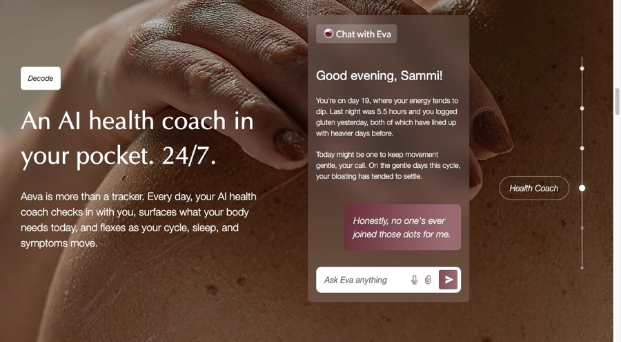

Chat de salud con respuestas citadasHealth chat with cited answers
Un asistente que responde preguntas médicas solo con contenido verificado, cita sus fuentes y se niega a salir del alcance clínico. Los datos del paciente nunca llegan crudos al modelo.An assistant that answers medical questions from verified content only, cites its sources and refuses to leave clinical scope. Patient data never reaches the model unredacted.
ingestembedpgvectorClaudeguardrails